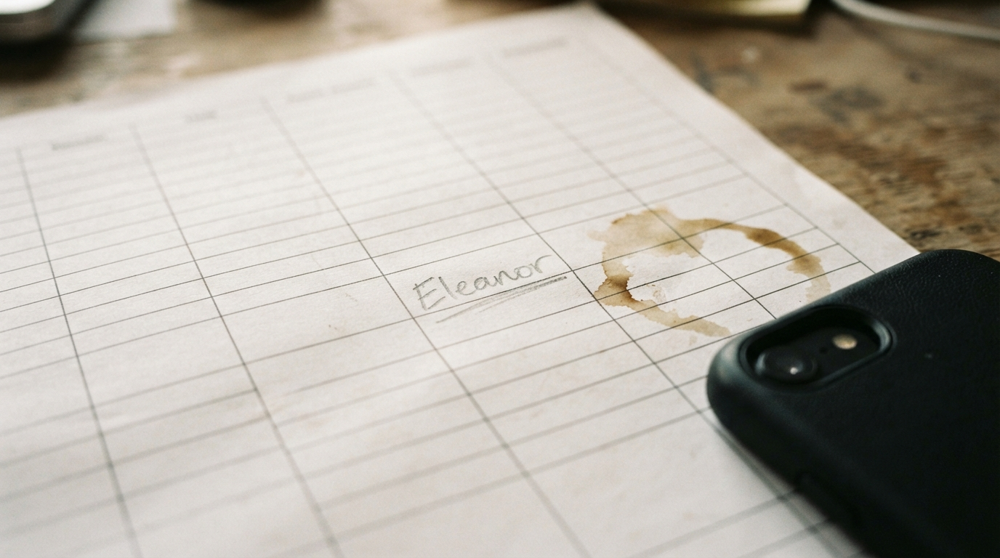

La hoja que ya tienes: columnas, una celda con nombre, el resto en blanco. El chat todavía no la lee.
El relatoLa fila
es el sistema
Hasta ahora la hoja era el sistema: el chat pregunta, alguien anota, y nadie mira si la fila existe.
Sheets canvas es una capa que lee y escribe la misma grilla. Cambias el tablero, cambia la hoja. Cambias la hoja, cambia el tablero. Eso es real. Lo publicó Google el 13 de agosto.
No lo leí como “ya no necesitas un sistema”. Lo leí así: el modelo se sentó donde ya había filas. Si el lead se quedó en Maps, si el hueco de la agenda no se escribió, el canvas no inventa el lunes.
El N°1 era el chat que deja de ser gratis. Este número es la hoja que sigue siendo el sistema — con o sin Gemini encima.
Lo que se rompe no es Excel. Es la costumbre de trabajar sin bajar el lead a una fila.